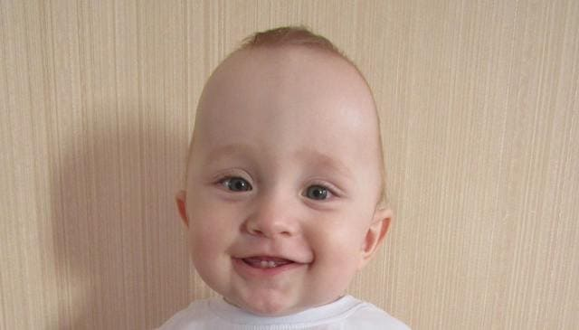
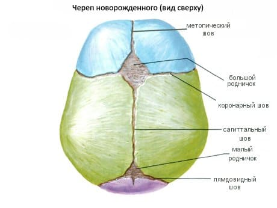
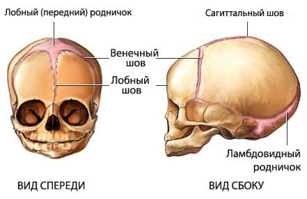

Череп новорожденного состоит из многих отдельных костей, которые расположены друг возле друга и соединяются волокнистой тканью. Это позволяет черепу быть более эластичным и приспособиться к растущему мозгу младенца. Между костями расположены небольшие промежутки, которые называются швами. Наличие этих швов важно для нормального роста и развития черепа и мозга. Когда ребенок становится старше и мозг достигает своего полного размера, кости черепа постепенно срастаются. Краниосиностоз (означает раннее срастание костей черепа) — состояние, развивающееся, когда швы (промежутки между костями черепа) исчезают слишком рано. Это может помешать нормальному росту мозга и черепа и, оставленное без лечения, привести к развитию других медицинских проблем в будущем.
Настоящая причина краниосиностоза неизвестна. Он наблюдается у 1 из каждых 2000 новорожденных, поражая мальчиков вдвое чаще, чем девочек. Похоже, в развитии краниосиностоза играет роль наследственность, поскольку в некоторых семьях наблюдались повторные случаи. Однако большинство детей с краниосиностозом рождаются в семьях, не имеющих подобной истории. Считается, что наследственная форма краниосиностоза может встречаться одновременно с другими генетическими отклонениями.
Тяжесть краниосиностоза зависит от того, сколько швов черепа вовлечены в процесс и как рано кости начали срастаться.
ПРИЗНАКИ И СИМПТОМЫ
Любой или все из следующих симптомов могут подразумевать наличие краниосиностоза. Надо отслеживать такие признаки:
Обратитесь к врачу, если у вашего младенца есть любой из вышеперечисленных признаков.

ДИАГНОСТИКА
Диагностика начинается с анализа истории развития и врачебного осмотра вашего ребенка. После полного осмотра черепа и лицевых структур младенца помимо составления графика роста головы врач обсудит возможности дальнейшего обследования. Вы также должны сообщить врачу, если у вас в семье уже были случаи краниосиностоза или другие нарушения строения головы или лица, так как это может указать на наличие других генетических отклонений.
Если процентиль обхвата головы ребенка становится все ниже и ниже — это повод для беспокойства. Обсудите с врачом план дальнейших действий.
Специфические исследования, которые врач назначит при подозрении на краниосиностоз, включают:
СОВЕТ ДОКТОРОВ СИРС: СЛЕДИТЕ ЗА РОДНИЧКОМ Родничок находится на макушке младенца — это место, где сходятся четыре отдельные кости черепа. Обычно родничок постепенно уменьшается на протяжении первого года жизни, пока не исчезнет совсем. Если это произойдет раньше, чем ребенку исполнится год, сообщите об этом врачу во время очередного осмотра. |

ЛЕЧЕНИЕ
Лечение зависит от степени краниосиностоза, расположения и количества вовлеченных в процесс швов и костей, а также от наличия у ребенка каких-либо симптомов (например, монотонный плач) или задержки психомоторного развития.
В большинстве случаев показано хирургическое вмешательство. Его цель — обеспечить достаточное пространство для роста и развития мозга, исключить сдавливание его из-за раннего закрытия швов, улучшить внешний вид головы и лица ребенка. Операцию обычно делают до того, как ребенку исполнится год, так как в этом возрасте кости наиболее мягкие, податливые и хорошо поддаются хирургической коррекции. В тяжелых случаях операция должна быть проделана в как можно более раннем возрасте.
ОТДАЛЕННЫЙ ПРОГНОЗ
То, как пациент справляется с этим состоянием, зависит от выраженности краниостеноза и от того, насколько рано была выполненная хирургическая коррекция. Если краниосиностоз выявлен рано и операция успешна, состояние полностью компенсируется и дети в дальнейшем преуспевают. Оставленный без коррекции краниосиностоз может привести к повышению внутричерепного давления, развитию судорожных приступов и задержке развития. Обратитесь к своему врачу, если у вас есть сомнения по поводу размеров головы вашего новорожденного или младенца.
Здоровье ребенка от докторов Сирс / Сирс У. и др.